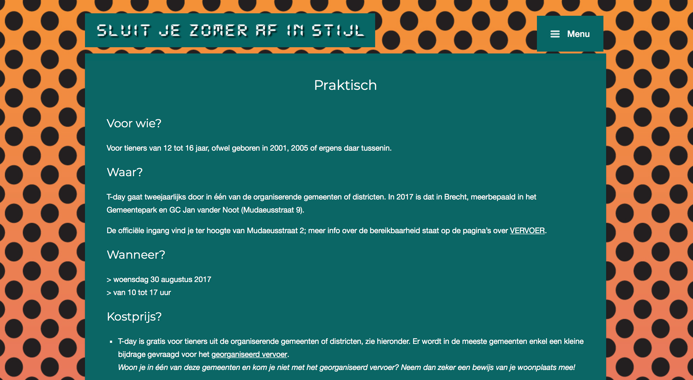

- De mogelijkheid om eet- en drankbonnetjes voor het festival te bestellen.
- Het onderaan vermelden van de verschillende sponsers.
- De knop tickets om de tickets te bestellen staan in een andere kleur. Dit valt meteen op en is aantrekkelijk om erop te klikken.
- Wanneer je op de knop tikets klikt opent er automatisch een nieuwe webpagina de ticketshop.
- Media button 'Snapchat' en onderaan de link naar hun Facebookpagina en Instagrampagina.
- In de footer staan de verschillende sponsers.
Pluspunten:
- Gebruik van drukke kleuren.
- Geen zoekfunctie aanwezig op de website.
- Er is geen nieuwsfunctie aanwezig met evntueel informatie van nieuwe optredens of afgelastingen.
- Bewegende beelden storen
- Enkel de mogelijkheid om de organisatie te contacteren via mail.
Minpunten:
T-Day



- Een functie 'Info voor ouders' met bijkomende informatie naar de ouders gericht.
- Ze hebben een contactformulier.
- Na het festival een bedanking op de website.
- De functie nieuws en updates is aanwezig.
- Alle activiteiten worden weergegeven met een duidelijke afbeelding wat de activiteit inhoud.
- Een aftermovie van enkele jaren terug. Geeft de mensen een beeld hoe het in zijn werking gaat in de praktijk en zo kunnen ze zien hoeveel plezier de kinderen hebben.
- Uitgelegd wanneer de ingehuurde bussen van het festival om welk uur in dorpen langs komt. Het vervoer van de kinderen wordt op een originele manier aangepakt.
Pluspunten:
- Het niet goed functioneren van de overgangen bij de achtergrondafbeeldingen.
- Het gebruik van een niet zo aantrekkelijk lettertype.
- Eerst op menu knop klikken voor je opties krijgt.
Minpunten:


- Ze hebben een contactformulier.
- Er is een Countdown clock aanwezig op homepagina
- Ze hebben een eigen reservatieplatform waar je jouw kan inschrijven.
- Herkenbaar logo en website.
- Druk knop om hun te volgen via hun Facebookpagina.
- Hun programma wordt weergegeven met alle artisten die aanwezig zullen zijn.
- De functies nieuws aanwezig.
- Er is een wedstrijd waaraan je kan meedoen om een gratis ticket te winnen.
- Een aftermovie van vorige editie.
- In de footer staan de verschillende sponsers. Ze zijn gelinkt naar de wbeiste van de sponsers.
Pluspunten:
- De rode knop onderaan bij contact is er geen tekst geplaatst, kan overkomen als een gewoon rood vak.
- De website werkt niet altijd even snel bij het drukken van de functies.
- De grootte van de knoppen op de home pagina zijn niet even groot. Hier ben ik voorstander van.